The feel
Jeremy Parish described Octopath Traveler as a storybook world that extrudes the dungeon maps of 16-bit console RPGs into three dimensions, then soaks everything in atmospheric light and shadow.1 With polygons dressed up as sprites and seen from fixed camera angles, it becomes something like an interactive pop-up book,1 and Game Informer found that its pixel art, presented in 3D, makes the world feel like a diorama.2
It feels less like a copy of the 16-bit era than its continuation: a 16-bit RPG that has evolved into something new rather than nostalgia bait,1 or a game from an alternate timeline in which Chrono Trigger and Final Fantasy VI started a line of RPGs that never strayed far from their 16-bit roots.2 Takashi Tokita backed HD-2D for the Live A Live remake because he felt full 3D would change the original's image too much, while HD-2D could blend the strengths of pixel art with effects only 3D can do.3
- miniature
- lamplit
- storybook
- dreamlike
- glowing
- shallow-focus
Where it comes from
Producers Masashi Takahashi and Tomoya Asano started Octopath Traveler, chose Acquire as development partner for its pixel art, and asked what rich-looking pixel art enhanced by modern technology would look like.4 Their team had aimed for a similar effect in Bravely Default, and Octopath Traveler, released in 2018, did it far better, applying Unreal Engine 4 to its sprite work and using tricks such as depth-of-field blur.1,5 Square Enix calls the result HD-2D, "a fusion of retro pixel art and 3DCG",5 and it became a signature style, carried into Triangle Strategy and a remake of the 1988 Dragon Quest III.6 Takashi Tokita, who directed the Super Famicom Live A Live and later joined Asano's team, produced its 2022 HD-2D remake,3 and an indie studio has taken the style up too: Pixelated Milk's SacriFire was inspired by it.7
Core elements
Pixel sprites in a polygon world
Octopath Traveler blends modern polygons with old-school bitmap graphics.1 The characters stay hand-drawn pixel sprites, and for the Live A Live remake the pixel artists drew about twice as many animation patterns as expected.3
Pixel textures on 3D shapes
The ground and buildings are built from polygons and papered over with tile sets meant to emulate SNES sprites.8 In SacriFire the environment is 3D, but every texture on it is hand-painted pixel art.7
Shallow depth of field
Depth-of-field blur is one of the tricks that made Octopath Traveler far better at this look than the team's earlier Bravely Default.1 From the first visual tests, made in Maya, the plan was to use post effects to make Octopath Traveler look like a miniature.9 The pattern of blur in a picture can strongly influence how big its scene looks: rendered sharp, a city looks large and far away, while blur from a simulated 60 m aperture makes it look like a miniature model.10
Dynamic lighting on sprites
Octopath Traveler II combines nostalgic art with modern lighting.7 In the first game each character throws an accurate shadow, where old RPGs could do little more than park a uniform black circle under each one.8
Fixed low camera angles
Octopath Traveler's low camera angles create hidden pathways that tuck treasure and secret areas behind raised scenery in the foreground, and its level design turns nearly every town and path into a spatial puzzle.1 Pixelated Milk also sets SacriFire's camera low to the ground, for a wide view of the horizon.7
Selective modern effects
Octopath Traveler's team found it tough to balance things such as whether water should be pixel or photoreal,4 and Digital Foundry's video shows how carefully Square Enix chose when and how to lean on the old versus the new.8 Live A Live's remake makes that choice chapter by chapter: its science-fiction chapter can lean towards 3D, while others put more weight on a hand-drawn feel.3
How to do it
Draw sprites for a 3D set
Draw the characters as sprite sheets and model the places in 3D, then play each sheet's frames in sequence as a flipbook on a flat sprite in the scene.11 To make Octopath Traveler's motion in bulk, Acquire cut each character into parts, swapped the parts into poses made beforehand with a puppet-warp tool, and fixed broken pixels by hand.9 Give each sprite a pixel size, the width of one sprite pixel in the 3D world.12
Turn the sprites to the camera
Stand each sprite up to face the lens with billboarding: either the whole sprite turns to face the camera, or it turns only around its vertical axis.13 Watch the shadows of billboarded sprites: an engine may turn them to face the camera when it renders shadows too, which goes wrong in scenes with several cameras.12 Test how far the camera can turn: Acquire says its pixel-art characters resemble flat sheets of paper, and for Octopath Traveler II it had to judge how far the camera could rotate without spoiling the picture, pushing it to nearly 90 degrees in some battle effects and 180 in some events.14
Keep the pixels hard
Switch sprites and pixel textures to nearest-neighbour filtering. Linear filtering with mipmaps looks smooth both up close and far away, while nearest with mipmaps looks pixelated up close and smooth in the distance.13 For sprite edges, use an alpha cut that allows only fully opaque or fully transparent pixels, which also avoids sorting errors where transparent sprites overlap.12
Light the sprites with the set
Light the sprites with everything else: turn shading on for them, so that the scene's lights affect them.12 Every character should throw an accurate shadow, not sit on a black circle.8 Octopath Traveler's battles have their own point lights, placed in the level so shadows change dynamically, and the map's sunlight switches off during lighting effects, which also lightens the load.9
Blur the near and far planes
Blur the foreground and background so only a narrow band stays sharp, as a tilted lens does.10 Acquire tuned its playable Octopath Traveler prototype to show the pixels, with a deep depth of field that kept them sharp near and far, and found it looked last-generation.9 Using the near and far blurs together creates a so-called tilt-shift effect.15 Set where the near blur ends and where the far blur begins, each with a transition zone, and keep the blur amount as low as the art style allows.16 For a stronger blur, use a low f-stop, move the camera closer and lower the field of view, and show the focal plane while you set the focus.17
Add bloom and post effects
Octopath Traveler's bloom, colour grading, bokeh depth of field, lens flares, ambient cubemap and vignette all come from the engine's built-in post-process settings, with some values tuned map by map.9 Acquire calls these post effects a big key to the game's look.9 Glow makes bright pixels bleed onto the pixels around them.18 It stays weak or invisible until light passes the HDR threshold or bloom is set above 0; the threshold is normally 1.0 and can be lowered to let more light bleed.15 A soft-light blend works best on dark scenes, and smaller glow levels make strong glows around objects rather than a haze over the whole screen.15
Cheat sheet
Do
- Fill the screen with tile variations and colour. Octopath Traveler's sprites looked lonely on a large screen until the team did.4
- Plan maps as clear top-down layouts and test them. Tokita based Live A Live's HD-2D maps on the original top-down ones: the more detailed the art, the harder it is to see where you can walk, where the entrances are and where the stairs go, so his team kept testing until the maps read clearly.3
- Use 3D for the air of each place. Live A Live's remake has swirling dust in its Wild West chapter and holograms rising in a cold white spaceship in its science-fiction chapter.3
- Keep what matters in the sharp band. Photographers and cinematographers direct the eye to an object by rendering it sharp and the rest of the scene blurred.10
- Build interiors at their own scale. Octopath Traveler's interiors are built at half scale, and a trigger at the door switches the lights, post effects, visible objects, camera distance and character size, so the change between inside and outside is seamless.9
Avoid
- A flat view. Octopath Traveler's early tests lacked depth and looked uninteresting.4
- Too much resolution and saturation. Fake miniatures often raise the saturation of the whole image so the scene looks close and small,10 but going too far on resolution and saturation cost early Octopath Traveler tests the appeal of pixel art.4
- Soft filtering and dark halos. Parish found sprites haloed by ugly dark outlines, and blurry filtering on some details that recalled the Nintendo 64, in a bad way.1
- A blur band that ignores depth. Blur that doesn't follow the scene's distances does least to change its apparent size, and even a well-aligned gradient falls behind true depth blur as the scene gets less flat.10
- A wide lens and levels without height. Early in Octopath Traveler's development, a wide angle of view, houses at the same scale as the characters and level design with little change in height made the scale feel wrong, and getting it right took time.9
Tools and tutorials
- Godot: Environment and post-processing
Depth of field, with near and far blur used together for a tilt-shift effect, and what it takes for glow to show.15
- Godot: SpriteBase3D
Billboard, shading, alpha cut and pixel size settings for 2D sprites in a 3D scene.12
- Godot: BaseMaterial3D
Billboard modes, and the nearest and linear texture filters with and without mipmaps.13
- Godot: CameraAttributesPractical
Near and far depth-of-field blur, their distances and transitions, and the blur amount.16
- Unreal Engine: Paper 2D
Sprites, flipbooks and tile sets for 2D/3D hybrid projects.11
- Unreal Engine: Depth of Field
Near, focal and far layers, and a debug focus plane that shows where the focus sits.17
Palette
Snow in shade and in light from Octopath Traveler; moss, sunlit ground and shadow from Octopath Traveler II; a sunset from Octopath Traveler 0; Live A Live's night sky and the carpet of Dragon Quest III's throne room. Click a colour to copy its hex code.
Feel the vibe
In motion
Listen
Start here. Big and hopeful, good company while you block out a first town.
YouTubeGrave and stately, for planning a battle map one tile at a time.
YouTubeOne piano. Hear how much a single strong line can carry on its own.
YouTubeBroader and brighter. For long sessions lighting a town at dusk.
YouTubeA brass fanfare for setting out. Save it for the day a scene finally looks finished.
YouTube
More references
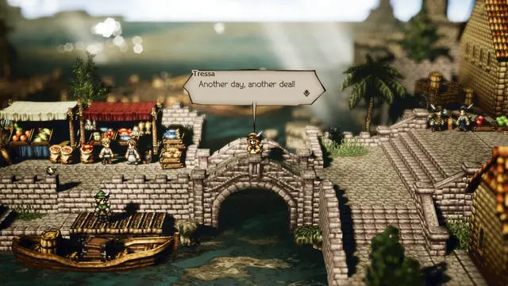
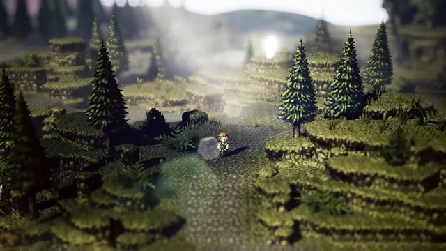
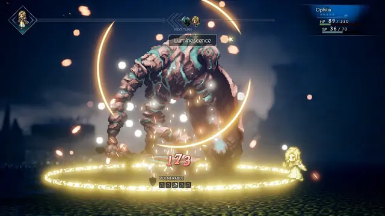
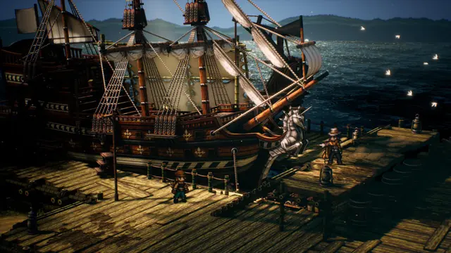
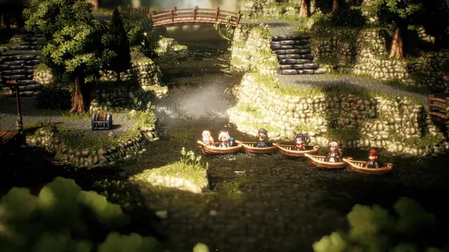
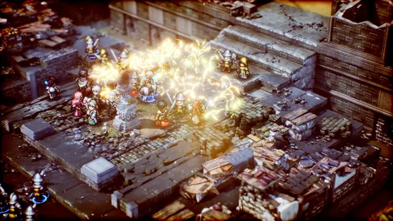
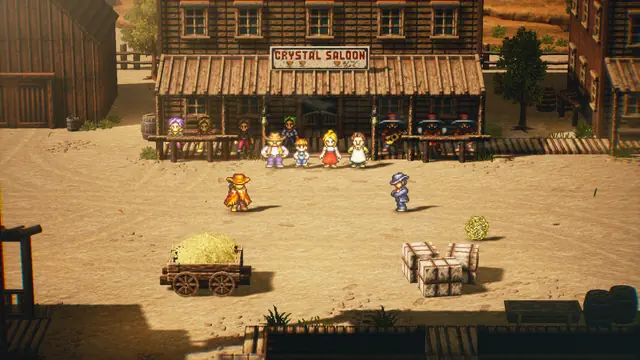
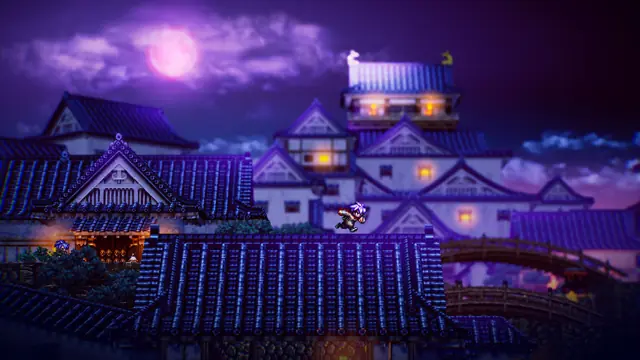
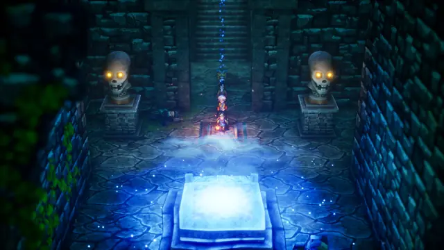
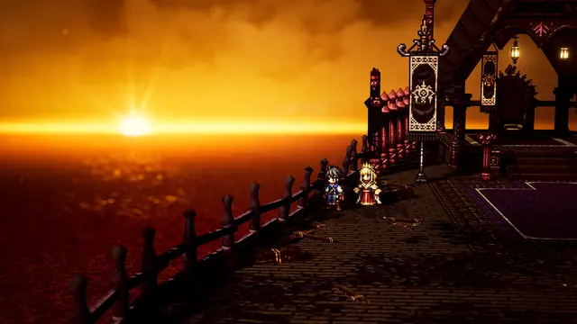
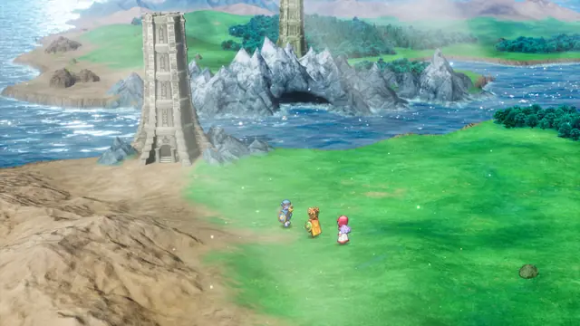
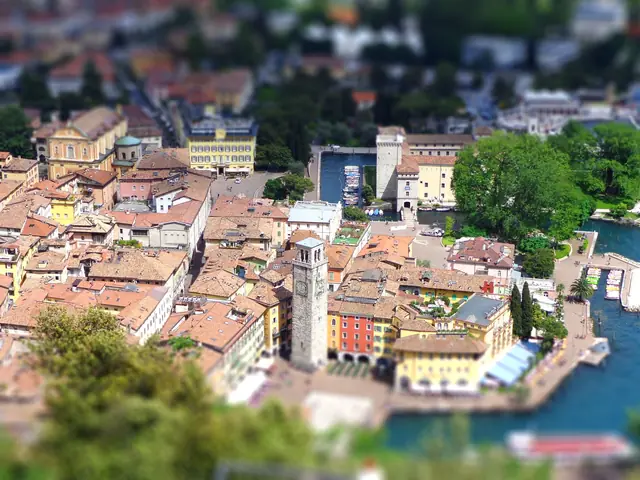
Games
- Octopath Traveler
Where HD-2D was worked out.4 Study how fixed camera angles and depth-of-field blur turn sprites and polygons into a pop-up book.1 It was built in Unreal Engine 4,8 with its characters as Paper 2D flipbooks.9
- Triangle Strategy
Octopath Traveler's style extended to a new game.6 Study how sprites and height stay readable on its battle maps.
- Live A Live
An omnibus of chapters set in different eras. Study how each gets its own effects and atmosphere.3
- Octopath Traveler II
Has a day-night cycle, which Acquire built with Unreal's Sequencer.14 Study how one town reads under both kinds of light.
- Dragon Quest III HD-2D Remake
A 1988 classic rebuilt with 3D effects and assets around updated sprites.6
Film, art and more
- Using Blur to Affect Perceived Distance and Size
Why blur changes how big a scene looks, with tests of tilt-shift lenses and blur gradients on views of a city.10
- Tilt-shift photography
Photographers make a full-size scene look smaller by adding blur with a special lens or in software.10
- Pop-up books
Jeremy Parish's comparison for Octopath Traveler's sprite-dressed polygons and fixed camera angles.1
- Dioramas
Game Informer says Octopath Traveler's pixel art, presented in 3D, makes its world feel like one,2 and Polygon calls it a 2D sprite diorama style.1
Sources
- 1Octopath Traveler is the magical RPG the Nintendo Switch needed
- 2Octopath Traveler review: An Arduous But Rewarding Journey
- 3『ライブアライブ』リメイクの新要素や変更点を時田貴司氏に訊く。何度も続編やリメイクにトライし断念、浅野チームに合流してついに実現 (Takashi Tokita on the Live A Live remake, made at last after he joined Team Asano)
- 4Project Octopath Traveler Developers Answer How The Project Started, And The Troubles In Developing HD-2D
- 5OCTOPATH TRAVELER II will release on 24 February 2023 on Nintendo Switch, Steam, PS5, and PS4!
- 6Dragon Quest 3 Is Being Remade in the Style of Octopath Traveler
- 7Retro role-playing video games are all the rage: here's why
- 8How Octopath Traveler Uses Unreal Engine 4 to Blend Old and New School Graphics
- 9Nintendo Switch『OCTOPATH TRAVELER』はこうして作られた (How Octopath Traveler for Nintendo Switch was made)
- 10Using Blur to Affect Perceived Distance and Size
- 11Paper 2D
- 12SpriteBase3D
- 13BaseMaterial3D
- 14Octopath Traveler II builds a bigger, bolder world in its stunning HD-2D style
- 15Environment and post-processing
- 16CameraAttributesPractical
- 17Depth of Field
- 18Environment